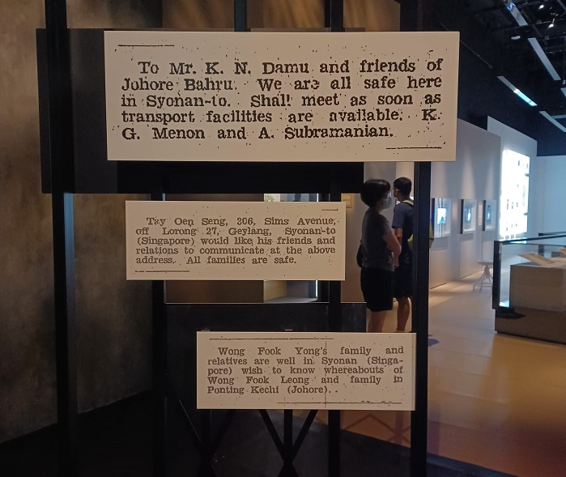

The National Museum of Singapore was first opened in 1849 as the Raffles Library and Museum. It is Singapore's oldest museum that aims to tell the nation's story. It has certainly come a long way from its colonial roots to exploring the more contemporary aspects of our national past.
Any national museum must naturally tell the story of the nation it inhabits, so the go-to exhibition that one should not miss is the permanent exhibition at the Singapore History Gallery. This exhibition seeks to push back the timeline of Singapore's history beyond 1819 to explore what happened on the island prior to Raffles' arrival. It is neatly divided into the key segments of Singapore's history yet they are all connected seamlessly. For instance, you'll be greeted by the ominous sounds of bombs as you step into the section on World War II, a transition from the previous section in our history showcasing peaceful development. There are also a couple of interactive elements, such as how you can smell what the Singapore river was like prior to the cleanup! This exhibition packs both education and excitement within it!
Another exhibition I recently visited was Dislocations:Memory & Meaning of the Fall of Singapore, 1942 which commemorates the 80th anniversary of the fall of Singapore. This exhibition serves as a poignant display of what living through the war was like. I particularly like how it takes a popular approach to look at an event that truly permeated the lives of the most ordinary people. The exhibition features artefacts that were excavated from a Sook Ching burial site, comprising ordinary items like coins and watches to underscore how lives were massively disrupted by the war. I was profoundly touched by a section of the exhibition that displayed newspaper advertisements placed by those who were searching for their loved ones in the aftermath of the world. It was saddening to think of the suspense and uncertainty that must have existed as one contemplated the safety of their loved ones and eagerly sought their response after a maelstrom of confusion and chaos. This exhibition not only sheds light on an earth-shattering event in our history, but more importantly, encourages us to understand just how devastating the war must have been for those who had been through it.

Apart from sharing the richness of history through its exhibits, the Museum also has its own cafe, most appositely named Food for Thought. This cafe offers dishes inspired by the stories featured in the galleries, making it just the right place for catching a snack in between gallery visits!
The National Museum of Singapore is located at 93 Stamford Road, Singapore 178897, and is open from 10am to 7pm daily. Admission is free for Singapore Citizens and Permanent Residents. You may visit their website for more information.